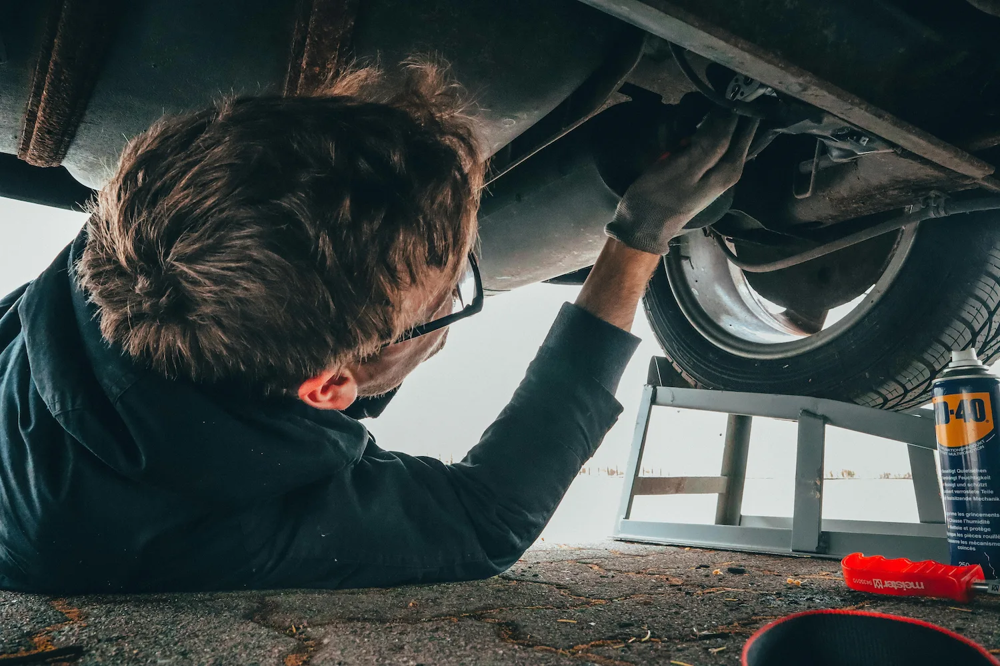

Jak przygotowa auto do zimy w Pszczynie?
Przygotowanie samochodu na zim to kluczowy moment dla każdego kierowcy, szczególnie w regionie pszczyskim, gdzie zimy mog by surowe...
Praktyczne porady dla kierowców z Pszczyny i okolic. Dowiedz si wicej o utrzymaniu swojego samochodu w idealnym stanie.
Przygotowanie samochodu na zim to kluczowy moment dla każdego kierowcy, szczególnie w regionie pszczyskim, gdzie zimy mog by surowe...
Diagnostyka komputerowa to nieodczny element wspóczesnego serwisu samochodowego. W AutoKord w Pszczynie posiadamy...
Wyciszanie samochodu to inwestycja, która przekada si na komfort jazdy i jako codziennego użytkowania pojazdu...
Konserwacja podwozia to jedna z najważniejszych czynnoci konserwacyjnych, szczególnie w regionie pszczyskim...
Warsztat samochodowy w Pszczynie AutoKord dzieli si wiedz o najczstszych objawach uszkodze pojazdów...
Montaż car audio to doskonay sposób na popraw komfortu jazdy i jakoci d藕wiku w Twoim samochodzie...
Wybór odpowiedniego warsztatu samochodowego to kluczowe zadanie dla każdego waciciela pojazdu...
Wymiana opon to jedna z najważniejszych czynnoci konserwacyjnych, która zapewnia bezpieczestwo jazdy...
Skontaktuj si z nami, a nasz zespó specjalistów pomoże Ci rozwiza każdy problem z Twoim samochodem.